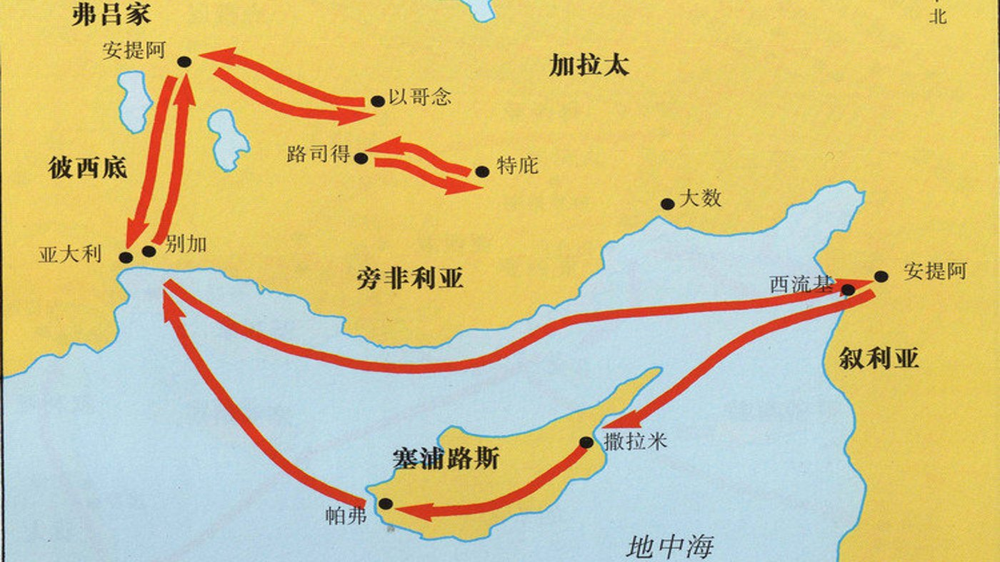

劝你们离弃这些虚妄，归向那创造天地海洋和其中万物的永生神。 使徒行传 14:15
本次查经研读使徒行传第14章，追随保罗和巴拿巴第一次宣教旅程所经过的以哥念、路司得 和特庇。讨论突出了一个反复出现的模式：福音被传讲，有些人相信，另一些人则猛烈反对。 主要主题包括：神迹的目的（是印证信息，而不是荣耀传信息的人）、即便在信徒中也存在的 偶像崇拜的危险，以及针对不同听众把传福音的方式处境化的必要。课程最后以问答结束， 讨论了犹太信仰与基督信仰的关系，以及弥赛亚的本质。
借助地图定位
第一次宣教旅程的地图，被用作地理进程的直观参照：安提阿（叙利亚）→ 塞浦路斯 → 彼西底的安提阿 → 以哥念 → 路司得 → 特庇，然后回到安提阿。

在以哥念的事工（使徒行传14:1-6）
保罗和巴拿巴在犹太会堂里传道，有许多犹太人和希腊人信了。不信的犹太人煽动外邦人来 攻击他们，使反对愈演愈烈。然而使徒们仍在那里住了很长时间，放胆传讲，神也藉着神迹 奇事印证他们的信息。城里的人分成了两派——一派站在使徒这边，一派站在犹太反对者那边。 当发现有人图谋用石头打他们时，他们就逃往路司得和特庇。
路司得的医治与群众的反应（使徒行传14:7-13）
保罗医治了一个生来就瘸腿的人。群众的反应是称巴拿巴为"宙斯"，称保罗为"赫尔墨斯"—— 因为保罗是主要的讲员。宙斯庙的祭司带着公牛和花环来到城门口，要向他们献祭。

保罗和巴拿巴拒绝敬拜；保罗被石头打（使徒行传14:14-20）
保罗和巴拿巴撕裂了衣服，冲进人群，坚决拒绝被敬拜，并把人们的注意力引向永生的神。 保罗讲论神的普遍恩典——雨水、四季和食物——作为独一真神是创造主的证据。随后，从安提阿 和以哥念来的犹太人煽动了群众；保罗被石头打，被拖到城外，人们以为他已经死了。他起来， 重新走进城里，第二天就与巴拿巴一同前往特庇。

宣教中反复出现的模式
贯穿保罗旅程的有一个一致的循环：传讲 → 有人相信 → 反对兴起 → 逼迫 → 转往下一座 城。同样的信息产生两种不同的反应——相信与弃绝——这种二元分化是意料之中的，并非例外。 这与耶稣对十二门徒的教导相呼应：在一座城被逼迫，就逃到另一座城；优先的是传讲福音， 而不是对抗或辩论。门徒们从一座城走向另一座城，并非出于恐惧，而是出于策略上的专注—— 把福音带给还没有听过的人。
神迹：印证，而非名人效应
神藉着神迹奇事印证使徒们的信息，尤其是在福音扩展的初期。路司得瘸腿之人的医治，与 彼得在美门口的医治明显相呼应——两个人都是生来瘸腿。神迹的用意是印证关于耶稣基督是主的 信息，而不是抬高传道人的地位。保罗和巴拿巴示范了正确的回应：当群众要敬拜他们时，他们 强烈地拒绝，并撕裂自己的衣服——这是犹太人面对亵渎时表达惊骇的方式。
随后有一个关键的警告：光靠神迹并不能使人归向真神。路司得的群众是通过他们既有的异教 框架来理解这个医治的，结果敬拜了完全错误的对象。
偶像崇拜与误解神的危险
人们是透过自己既有的预设来解读非凡事件的；路司得的群众自然而然地回到了他们希腊/ 罗马多神论的世界观。这并不只是外邦人才有——以色列人在摩西上西奈山时造了金牛犊， 把脱离埃及的拯救归功于一个偶像。基督徒同样容易如此：若不持续地亲近圣经，一个人心中 对神的形象就可能变得扭曲，或与其他信仰体系混杂。小组提到，有信徒的信仰因混合了星座、 佛教和基督教而变得混乱——这说明了持有非圣经的神观的真实风险。
领袖与把荣耀归给神
保罗和巴拿巴为基督徒领袖树立了榜样：事奉有果效时，把一切的关注和敬拜都转向神， 而不是转向自己。属灵领袖面临一种特别的试探——"偷取神的荣耀"，无论是享受人们对讲道的 赞美，还是在没有回应时感到泄气。正确的姿态是忠心地尽传讲的本分；在人心中做转变工作的， 是神。如果有人开始抬高或敬拜某位领袖，必须立即、坚决地加以纠正。
福音的处境化
保罗传讲的方式，因听众的不同而有明显差别：
- 对犹太人：他从旧约历史、列祖、大卫和弥赛亚预言来论证，因为他们 有共同的圣经根基。
- 对外邦异教徒：他不引用圣经（对他们来说是陌生的），而是诉诸普遍 恩典——雨水、收成、食物、四季——作为独一创造主的证据。
面对多神论者，传福音的次序需要先把他们从"许多神"带到"独一的神"，然后再介绍耶稣 基督的位格与工作。这个原则可以广泛应用：在知识水平较高的城市，理性的对话和查经很有 效；在受正规教育较少的群体中（例如非洲的一些地方），神迹奇事可能起更大的作用。课上也 提到了保罗后来在雅典的例子——他以"未识之神"的碑文作为传讲的切入点。有效的传福音， 需要认识这个人、了解他的"痛点"、为引导而祷告，并据此调整方式。
创造作为启示
保罗对普遍恩典的诉求，反映了一条更广泛的圣经原则：创造显明神那看不见的属性——祂的 大能、智慧和神性。罗马书对此也有呼应：人藉着所造之物可以看出创造主的荣耀，却往往把 这荣耀归给受造之物。从微观（细胞、DNA、原子）到宏观（星系、宇宙），科学的发现越来越 指向神创造能力的浩大。课上分享了一个故事：一位地质学者用放大镜观察矿物的结构，被神 创造的精妙所震撼，因而信了主。还提到从太空看过地球的宇航员，作为被宇宙的视角感动而 敬拜的例子。
保罗的苦难与身上的印记
路司得的石头打，很可能是保罗整个事奉生涯中最危及生命的一次事件。他的伤势如此严重， 以至于群众以为他死了。保罗后来在加拉太书6:17写道："我身上带着耶稣的印记"——这可能 指的是这次事件留下的永久伤疤或残疾。据说保罗的外貌并不起眼，也有人推测这次被石头打 造成了某种残疾。讨论还把这件事与哥林多后书12章联系起来：保罗在那里描述自己"被提到 第三层天"，不知道是在身体里还是在身体外——这可能是这次被石头打时的濒死经历。
还有一层讽刺：保罗自己从前曾赞同用石头打死司提反（使徒行传7章），如今他自己也遭遇 了同样的命运，这加深了他对自己过往罪过以及所领受之恩典的理解。
人性的不稳定
那群想把保罗和巴拿巴当作神来敬拜的群众，不久之后就在从安提阿和以哥念来的犹太人的 煽动下，加入了用石头打保罗的行列。这与棕树主日欢迎耶稣为王、数日之内又喊着要钉祂十字架 的群众如出一辙。教训是：人是靠不住的，唯有神是恒常不变的。若没有圣灵持续的工作，任何 人都可能发生戏剧性的道德逆转。
- 思考：当我的事奉被称赞——或被忽视——的时候，我的心往哪里去？我是否 把荣耀归给神？
- 思考：我心中对神的图像带着哪些预设？它是由圣经塑造的，还是由其他 信念塑造的？
- 实践：向某人传福音之前，先去了解他是谁、心里背负着什么，并祷告 求智慧，用他能够明白的方式来讲。
- 接下来：下周继续，从本次在使徒行传第14章结束的地方接着往下查。